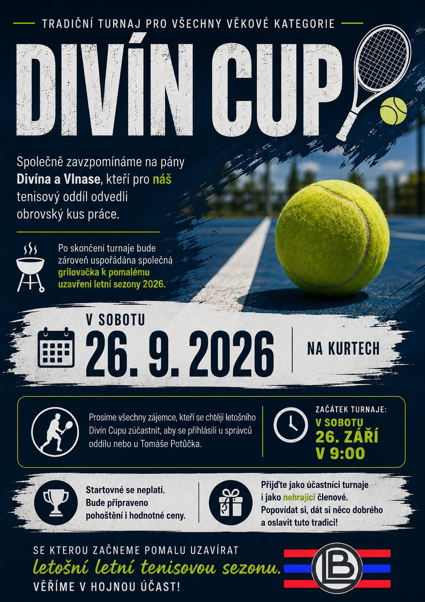
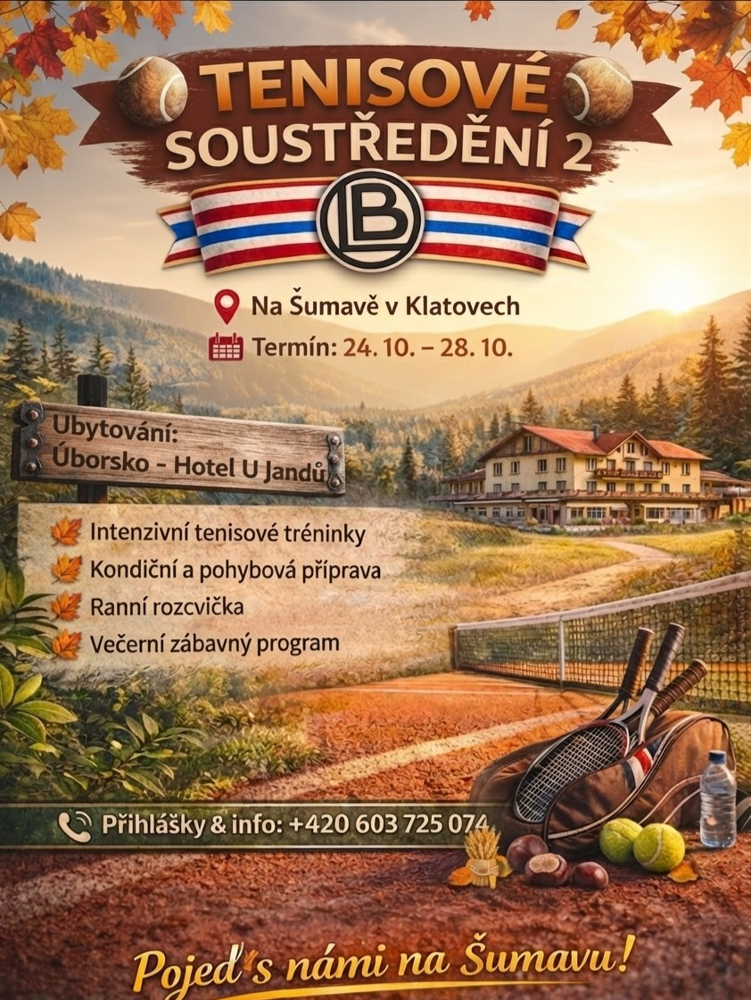
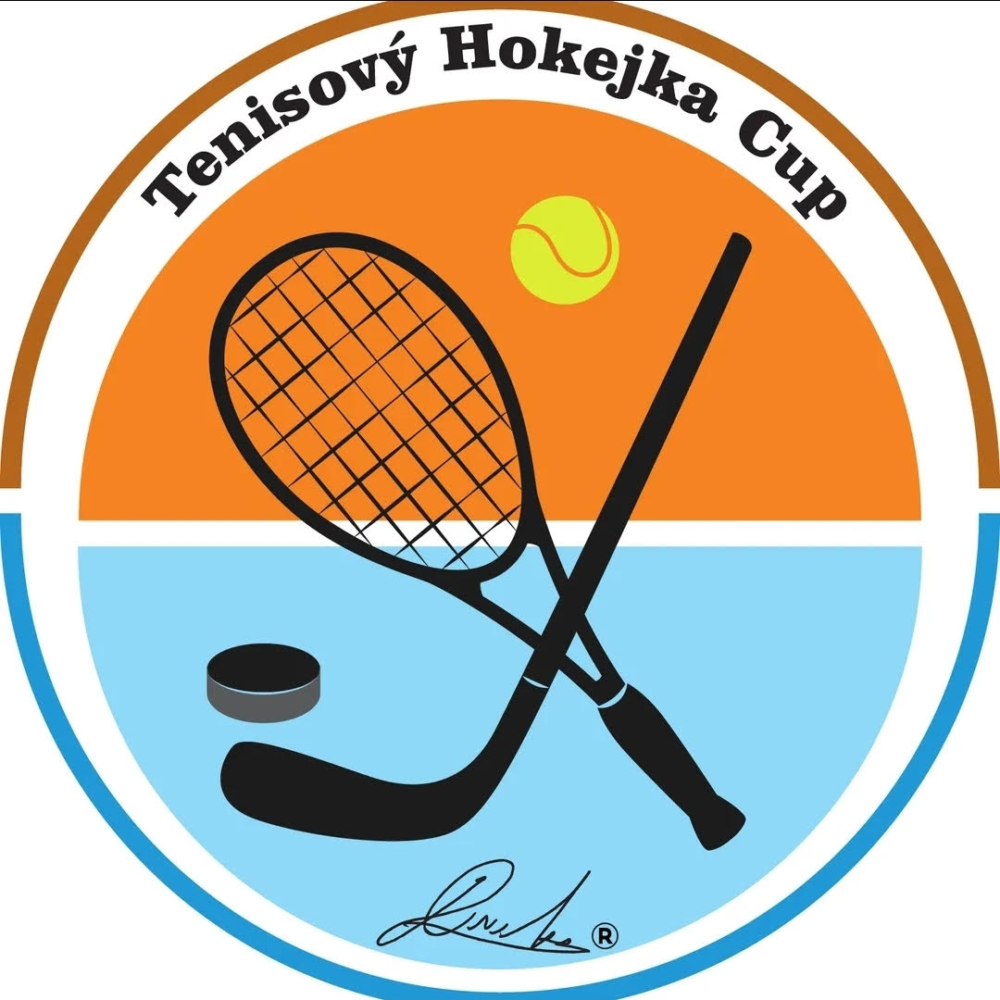
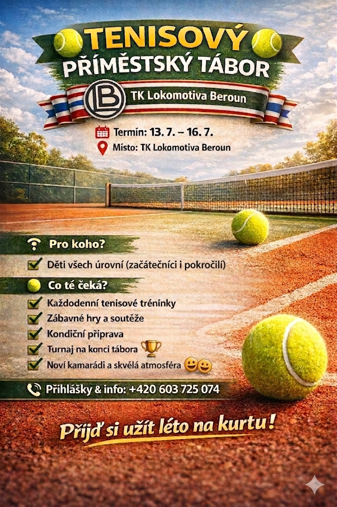
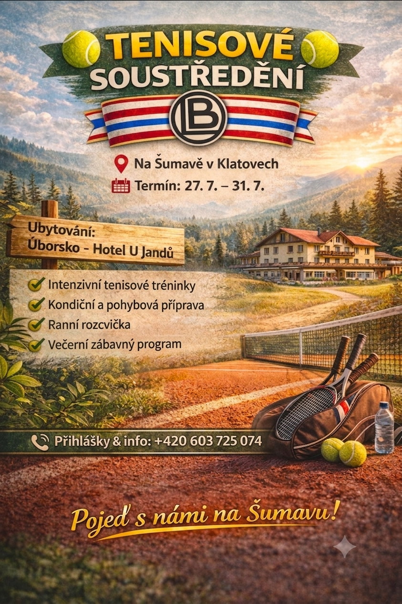
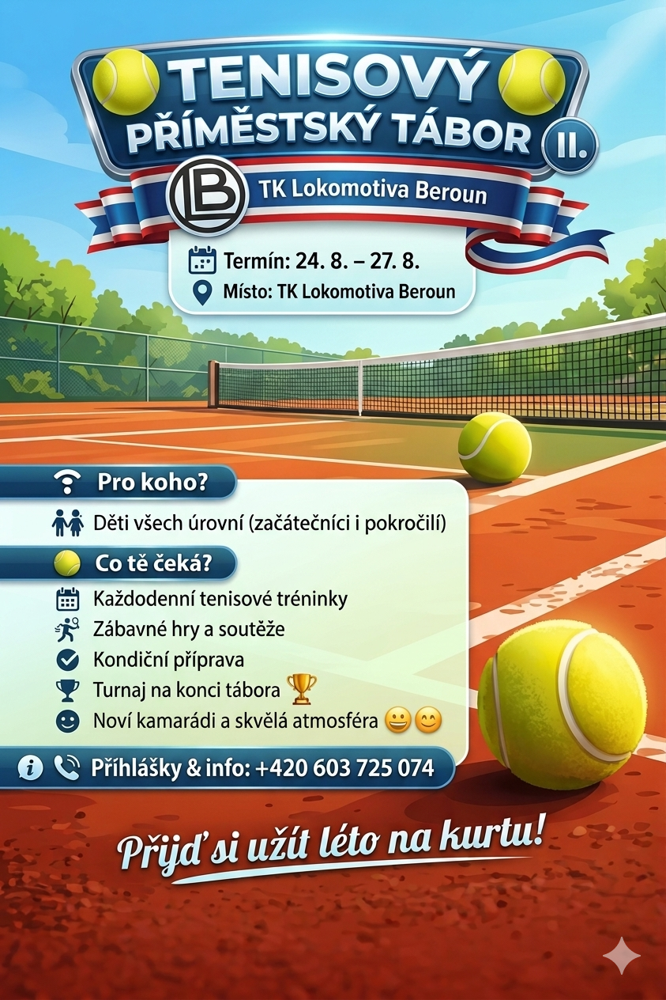

Přehled všech akcí TK Lokomotiva Beroun
Zde naleznete právě probíhající a připravované akce našeho tenisového klubu.

Každoroční podzimní soustředění zaměřené na tenisovou přípravu, kondici a týmového ducha v krásném prostředí Šumavy.
📷 Zobrazit plakátZde naleznete všechny připravované akce TK Lokomotiva Beroun, jako jsou turnaje, soustředění, příměstské tábory, klubové dny a další události. Informace budeme průběžně aktualizovat.

Každoroční podzimní soustředění zaměřené na tenisovou přípravu, kondici a týmového ducha v krásném prostředí Šumavy.
📷 Zobrazit plakátJakmile budou potvrzeny termíny nových akcí, plakáty a podrobné informace se zobrazí zde.

Tradiční turnaj čtyřher pro všechny věkové kategorie pořádaný dne 26. září 2026 v 9:00.
📷 Zobrazit plakát
Příměstský tenisový tábor je určen pro děti všech výkonnostních úrovní. Každý den čekají účastníky tenisové tréninky, sportovní hry a zábavný program.
📷 Zobrazit plakát
Každoroční letní soustředění zaměřené na tenisovou přípravu, kondici a týmového ducha v krásném prostředí Šumavy.
📷 Zobrazit plakát
Druhý turnus příměstského tenisového tábora se uskuteční ve dnech 24.–27. srpna v areálu TK Lokomotiva Beroun a nabídne dětem tenisové tréninky, sportovní hry i spoustu zábavy.
📷 Zobrazit plakátZde naleznete plakáty a fotografie z minulých soustředění, příměstských táborů a dalších klubových akcí.
Postupně zde budou přibývat akce z předchozích let.